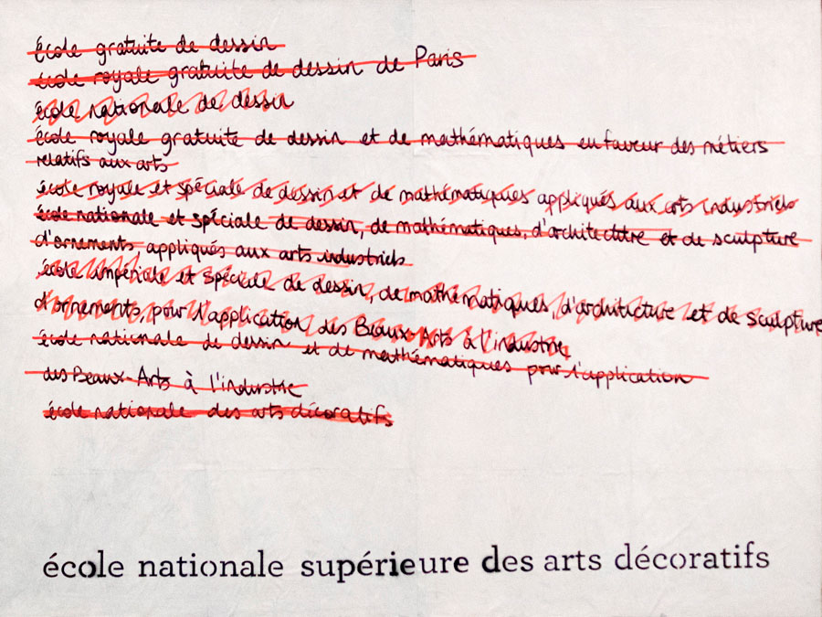
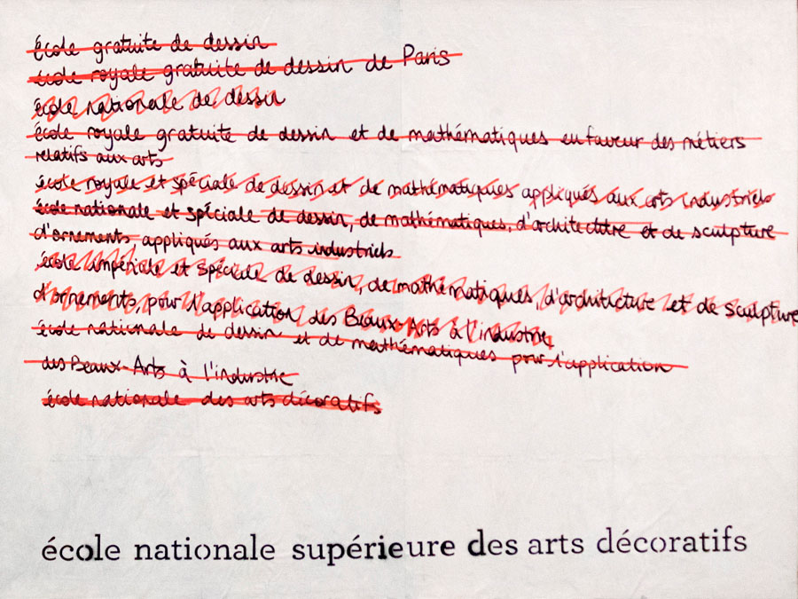

dixième du nom
un triptyque d'affiches à la main | 2017
À l’occasion du 250ᵉ anniversaire de lʼÉcole nationale supérieure des Arts Décoratifs, nous avons conçu et réalisé un triptyque d’affiches entièrement dessinées à la main.
Tous les noms qui ont été donnés à l’École depuis sa création en 1766 ont été répertoriés et analysés. Nous avons restitué ce travail en utilisant le langage visuel du brouillon : les affiches témoignent ainsi de la réflexion menée à travers les époques sur l’appellation de l’école. Ces changements de noms successifs témoignent des changements de cap pédagogiques qu’a connu l’école en 250 ans d’histoire.
Les affiches ont été visibles pendant un mois dans les couloirs de la station de métro Palais Royal - Musée du Louvre. Elles ont également été publiées dans ENSAD 250, un ouvrage documentant les 250 affiches exposées dans le métro à l’occasion de l’anniversaire de l’école.

 
